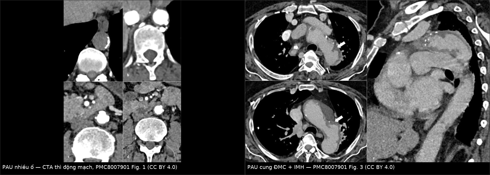
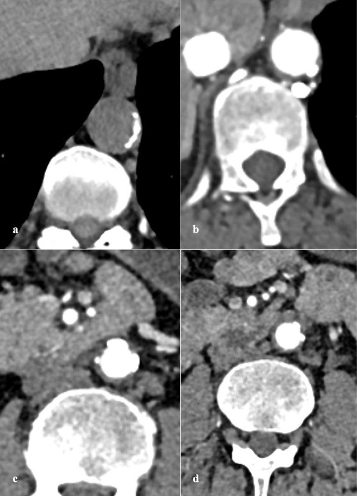
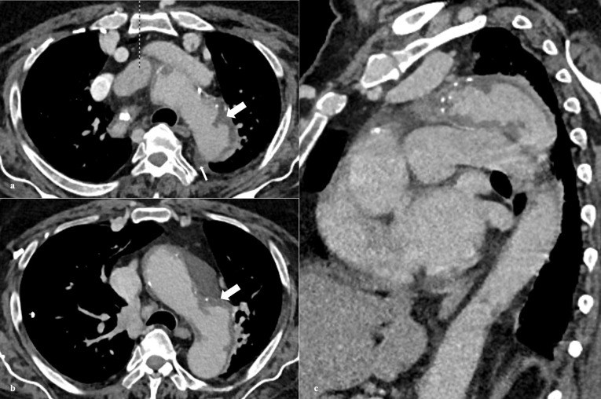
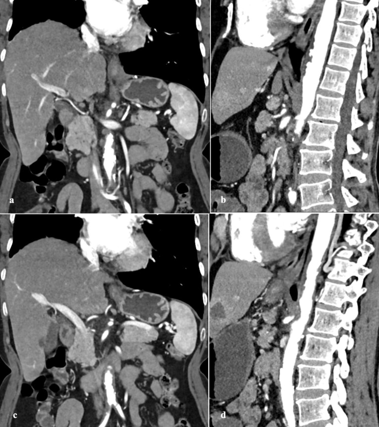

851 — Loét xuyên thành động mạch chủ (PAU): thể thứ ba của hội chứng ĐMC cấp / Penetrating atherosclerotic ulcer
Tags: pattern:loet-xuyen-thanh pattern:huyet-khoi-thanh-mach pattern:phinh-mach pattern:khuyet-thuoc vung:dong-mach-chu-nguc score:none protocol:CTA-ECG-gated protocol:MRI incidentaloma:pau
Mức chắc chắn (certainty): tổng hợp y văn (literature synthesis) — 1 bài tổng quan lâm sàng–hình ảnh–điều trị (J Cardiovasc Thorac Res 2021, PMC8007901, gộp 19 loạt ca, trong đó Nathan 315 ca và Cho 105 ca). Không có thử nghiệm ngẫu nhiên riêng cho PAU; bằng chứng là đoàn hệ hồi cứu và ca báo cáo.
Câu chốt: PAU không phải "túi phình nhỏ" và không phải bóc tách: đó là ổ loét của mảng xơ vữa ăn qua nội mạc vào trung mạc, trên CTA là ổ đọng thuốc lồi ra ngoài đường viền lòng mạch, sát vôi hóa nội mạc, gần như luôn kèm huyết khối thành mạch (intramural hematoma, IMH). Vì không có lòng giả, các tiêu chuẩn của bóc tách không áp dụng được; cái quyết định là triệu chứng + độ sâu/đường kính ổ loét + độ dày IMH + vị trí.
1. Tổng quan bệnh học – cơ chế hình ảnh
1.1 Vì sao có "ổ loét" và vì sao nó nguy hiểm
- Mảng xơ vữa loét → mất màng đàn hồi trong (internal elastic lamina) → máu động mạch ăn vào trung mạc (media). Trung mạc mất đàn hồi, không chịu được áp lực × bán kính (định luật Laplace) → phình giả (pseudoaneurysm) → bóc tách hoặc vỡ.
- Hệ quả theo thứ tự: loét → IMH → phình giả dưới ngoại mạc → vỡ / bóc tách / rò sang tạng lân cận. Vì thành đã xơ hóa, PAU hiếm khi tạo lòng giả hai ống (double-barrel) như bóc tách kinh điển — nhưng vẫn tiến triển được.
- 80% ca PAU có IMH đi kèm (loạt Mayo, theo tổng quan PMC8007901); 25% tiến triển trên theo dõi (Nathan, 315 ca); vỡ 13–14% (Nathan; Quint), tới 38% ở loạt toàn ca có triệu chứng và nửa ở ĐMC lên (Tittle).
1.2 Vì sao CTA thấy được — và phải chụp thế nào
- Ổ loét = ổ đọng thuốc (contrast-filled outpouching) lồi ra ngoài đường viền lòng mạch, sát một mảng vôi hóa nội mạc bị đẩy lệch vào trong. Kích thước vài mm đến 2,5 cm, sâu tới 3 cm, thường nhiều ổ (23% nhiều ổ trong loạt Nathan).
- IMH trên thì không cản quang: máu đông trong thành có 60–70 HU, hình liềm (crescentic) ôm theo thành, không ngấm thuốc. Đây là lý do bắt buộc có thì không cản quang: nếu chỉ có thì động mạch, IMH mỏng có thể "biến mất" và ổ loét bị đọc thành túi phình nhỏ.
- Thì động mạch đích ≥ 250 HU, ECG-gating để tránh giả ảnh nhịp đập (pulsation artifact) — giả ảnh này tạo "vạt" chạy ngang gốc ĐMC và bị đọc nhầm thành bóc tách.
- Lát 5 mm + tái tạo đa bình diện (MPR); tổng quan khuyến cáo giới hạn trường chụp ở ĐMC ngực nhưng vẫn phải đủ toàn bộ ĐMC để không bỏ sót ổ loét thứ hai hoặc lan xuống bụng.
- MRI: tốt hơn CT cho IMH vì không cần thuốc và phân biệt được tuổi máu — methemoglobin trong máu bán cấp T1W tăng tín hiệu (do Fe³⁺ chưa ghép cặp electron), còn huyết thanh/khối máu tối trên T1W. Chuỗi cine phân biệt dòng chậm của bóc tách với không dòng của IMH.
1.3 Ngưỡng định lượng phải nhớ
| Biến số | Ngưỡng | Ý nghĩa |
|---|---|---|
| Đường kính ổ loét | ≥ 20 mm | Dự báo tiến triển (Ganaha) |
| Độ sâu ổ loét | ≥ 10 mm | Dự báo tiến triển; > 10 mm là "loét sâu" |
| Độ dày IMH | ≥ 11 mm | Dự báo vỡ (tổng quan PMC8007901) |
| Đường kính ĐMC | > 40 mm tiến triển; > 50 mm tử vong; > 55–60 mm mổ | Theo dõi sát / chỉ định can thiệp |
| Tràn dịch màng phổi | không có = yếu tố CT duy nhất báo ổn định (Quint) | Có tràn dịch + đau dai dẳng = dấu hiệu xấu |
2. Mẫu hình + chẩn đoán phân biệt theo vị trí (gamut)
- ĐMC ngực xuống (hay gặp nhất): PAU đơn độc · PAU + IMH · bóc tách type B · phình giả nhiễm khuẩn · loét do viêm (Takayasu) · rò ĐMC–phế quản/thực quản.
- Cung ĐMC / ĐMC lên (ít gặp, nặng nhất): PAU cung/ĐMC lên → tràn máu màng tim, chèn ép tim, thiếu máu não; chỉ cần PAU + IMH type A là chỉ định can thiệp sớm.
- ĐMC bụng: PAU · phình giả nhiễm khuẩn · phình viêm (inflammatory aneurysm — thành dày, xơ quanh ĐMC) · túi phình dạng túi (saccular).
- "Họ hàng" dễ lẫn: ULP (ulcer-like projection) — ổ loét nhỏ đường kính lòng ≥ 3 mm, thường thấy trên theo dõi IMH; IBP (intramural blood pool) — ổ máu trong thành thông với nhánh (liên sườn/thắt lưng) qua cổ hẹp; FID (focal intimal disruption) và LIT (limited intimal tear) — rách nội mạc khu trú, có thể tiến triển thành bóc tách thật.
3. Bảng so sánh phân biệt (ma trận đối chiếu)
| Thực thể (entity) | Hình ảnh điển hình | Chốt vào (rule-in) | Chốt loại (rule-out) | Gợi ý xác nhận |
|---|---|---|---|---|
| PAU | Ổ đọng thuốc lồi ngoài đường viền lòng mạch, sát vôi hóa; ± IMH liềm | Ổ loét có cổ rõ + vôi hóa nội mạc bị đẩy vào trong + IMH quanh | Không có ổ đọng thuốc → không phải PAU (chỉ IMH) | CTA thì động mạch + không cản quang; đo sâu/đường kính |
| IMH | Liềm 60–70 HU không ngấm thuốc, dày thành > 5 mm (tới 10 mm) | Không thấy ổ loét, không có lòng giả | Có ổ loét → PAU + IMH | CTA không cản quang; MRI T1W |
| Bóc tách kinh điển | Vạt nội mạc (intimal flap) chia hai lòng, lòng giả có thể có "cobweb" | Hai lòng thật–giả + flap | Chỉ một lòng + ổ loét → PAU | CTA ECG-gated; TEE |
| ULP | Ổ loét nhỏ, đường kính lòng ≥ 3 mm, trong nền IMH | ≥ 3 mm + nằm trong IMH đang theo dõi | Ổ lớn, cổ rõ, ngoài IMH → PAU | So sánh các lần CTA |
| IBP | Ổ máu trong thành, cổ hẹp, thông nhánh liên sườn/thắt lưng | Cổ hẹp + thông nhánh | Cổ rộng, lồi ra ngoài → PAU/ULP | CTA đa bình diện |
| Phình giả nhiễm khuẩn | Túi dạng túi, thành dày, khí/mô viêm quanh ĐMC, sốt | Sốt + cấy dương + khí trong thành | Không viêm, nhiều ổ xơ vữa → PAU | CT + PET; cấy máu |
| Phình dạng túi (saccular) | Túi phình cổ rộng, không có ổ loét nội mạc riêng | Đường kính túi lớn, cổ rộng | Ổ loét nhỏ, cổ hẹp → PAU | CTA 3D |

Trái: nhiều ổ đọng thuốc lồi ra khỏi thành ĐMC có vôi hóa (PAU nhiều ổ). Phải: PAU ở cung ĐMC (mũi tên dày) kèm IMH và ít dịch màng phổi (mũi tên mảnh). Nguồn: Dev R et al., J Cardiovasc Thorac Res 2021, PMC8007901 Fig. 1 và Fig. 3 — CC BY 4.0; ảnh ghép letterbox bằngtools/make_composite.py.
4. Protocol chụp + phân tầng nguy cơ
- CTA toàn ĐMC, ECG-gated: không cản quang → thì động mạch (≥ 250 HU) → thì muộn nếu nghi rò/endoleak; lát 5 mm, MPR trục–dọc–ngang.
- Đo và ghi vào báo cáo (checklist): đường kính + độ sâu ổ loét, số ổ, độ dày IMH, đường kính ĐMC, tràn dịch màng phổi/màng tim, huyết khối trong lòng, nhánh tạng bị ảnh hưởng.
- Phân tầng: triệu chứng dai dẳng dù giảm đau/giảm áp lực, IMH ≥ 11 mm, PAU ≥ 20 mm hoặc sâu ≥ 10 mm, máu tụ quanh ĐMC, tràn dịch tăng, vị trí ĐMC lên/cung = nguy cơ cao.
- Điều trị: kiểm soát huyết áp (chẹn beta là nền tảng); TEVAR cho ca nguy cơ cao/ĐMC xuống; mổ mở hoặc TEVAR cho ĐMC lên/cung. TEVAR: vùng neo 1,5–2 cm mỗi đầu, quá cỡ ≤ 10%, không nong bóng mạnh khi có IMH (thành dễ rách).
flowchart TD
A[PAU trên CTA] --> B{Triệu chứng dai dẳng<br/>hoặc tụt áp?}
B -->|Có| Z[Can thiệp: TEVAR hoặc mổ]
B -->|Không| C{Vị trí ĐMC lên/cung<br/>hoặc IMH >= 11 mm<br/>hoặc loét >= 20 mm / sâu >= 10 mm?}
C -->|Có| Z
C -->|Không| D[Điều trị nội + theo dõi CTA]
D --> E{Có tiến triển:<br/>loét/ĐMC lớn hơn,<br/>tràn dịch tăng?}
E -->|Có| Z
E -->|Không| F[Theo dõi tiếp: 6 tháng/lần x 3 năm, sau đó mỗi năm]
- Lịch theo dõi (tổng quan): ca có triệu chứng 1, 3, 6, 12 tháng rồi mỗi năm; ca không triệu chứng 6 tháng/lần trong 3 năm rồi mỗi năm. PAU + IMH theo dõi suốt đời vì nguy cơ lòng giả muộn.
5. Biến thể bình thường và cạm bẫy
- Giả ảnh nhịp đập ở gốc ĐMC/dưới động mạch dưới đòn: "vạt" chỉ thấy trên 1–2 lát, không thấy trên MPR dọc → dùng ECG-gating, đối chiếu đa bình diện.
- Vôi hóa nội mạc giả ổ loét trên thì không cản quang: vôi có > 130 HU và không đổi hình giữa các thì; ổ loét đầy thuốc ở thì động mạch.
- PAU ĐMC lên < 10 mm rất dễ bỏ sót (tổng quan ghi rõ); nếu bệnh cảnh phù hợp (đau ngực, tràn máu màng tim) mà không thấy ổ loét → MRI/TEE.
- Đọc "IMH đơn thuần" khi thực ra có ổ loét: ổ loét nhỏ bị huyết khối lấp → so thì không cản quang + MPR mỏng, tìm ổ đọng thuốc.
- Bẫy thoả mãn tìm kiếm: 23% ca có nhiều ổ — tìm hết chiều dài ĐMC trước khi kết luận.
- Rò ĐMC–thực quản/phế quản: "chảy máu báo trước" rồi ồ ạt; nội soi thực quản thường quy có thể làm bùng phát chảy máu; stent-graft phủ ở đây có nguy cơ nhiễm mảnh ghép cao → cần bàn với phẫu thuật.
- Không có tràn dịch màng phổi là yếu tố CT duy nhất báo ổn định (Quint) — nhưng không đủ để loại trừ tiến triển.
6. Tự lượng giá — Blind Quiz
Ca 1 — Nam 72 tuổi, tăng huyết áp, đau ngực–lưng 6 giờ. CTA ngực có thì không cản quang và thì động mạch. Nhìn trước, mô tả ổ tổn thương.

- Câu hỏi: Có mấy ổ đọng thuốc? Chúng nằm trong hay ngoài đường viền lòng mạch? Có IMH không? Chẩn đoán và 3 phân biệt?
Bấm để hiện đáp án (findings + chẩn đoán)
- Dấu hiệu: (a) thì không cản quang — thành ĐMC dày, vôi hóa nội mạc; (b–d) thì động mạch — nhiều ổ đọng thuốc lồi ra ngoài đường viền lòng mạch dọc thành ĐMC xuống, sát vôi hóa. Đây là PAU nhiều ổ.
- Chẩn đoán: PAU (thể thứ ba của hội chứng ĐMC cấp). Phân biệt: bóc tách type B (có vạt nội mạc, hai lòng), IMH đơn thuần (không có ổ đọng thuốc), phình dạng túi (cổ rộng, không có ổ loét nội mạc).
- Xử trí: kiểm soát huyết áp; nếu đau dai dẳng/ổ loét lớn/IMH dày → TEVAR.
- Nguồn ảnh: Dev R et al., J Cardiovasc Thorac Res 2021, Fig. 1 — CC BY 4.0 (PMC8007901).
Ca 2 — Nữ 68 tuổi, đau sau lưng lan xuống, tràn dịch màng phổi trái lượng ít. CTA có MPR dọc.

- Câu hỏi: Tổn thương ở đoạn nào? Dấu hiệu nào chứng minh đây là PAU chứ không phải bóc tách? Yếu tố nào quyết định can thiệp?
Bấm để hiện đáp án
- Dấu hiệu: ổ loét đọng thuốc ở cung ĐMC (mũi tên dày), IMH dày quanh thành, dịch màng phổi ít (mũi tên mảnh). Không có vạt nội mạc chia hai lòng.
- Vì sao không phải bóc tách: không có lòng giả và vạt nội mạc; tổn thương khu trú tại mảng xơ vữa.
- Quyết định: vị trí cung/ĐMC lên + IMH = nguy cơ cao → hội chẩn can thiệp sớm (TEVAR/mổ), không chờ.
- Nguồn ảnh: Dev R et al., J Cardiovasc Thorac Res 2021, Fig. 3 — CC BY 4.0 (PMC8007901).
Ca 3 — Nam 75 tuổi, đau bụng–lưng; CTA bụng có MPR trục và dọc.

- Câu hỏi: Vì sao phải xem cả MPR dọc? Nếu ổ loét sâu 6 mm, đường kính 12 mm, không triệu chứng thì xử trí thế nào?
Bấm để hiện đáp án
- Dấu hiệu: ổ loét đọng thuốc nhô ra khỏi thành ĐMC, thấy rõ độ sâu và chiều dài chỉ khi tái tạo dọc; trục giúp xác định vị trí so với nhánh tạng.
- Xử trí: kích thước dưới ngưỡng (< 20 mm, sâu < 10 mm), không triệu chứng, ĐMC không lớn → nội khoa + theo dõi CTA 6 tháng/lần trong 3 năm. Nếu đau dai dẳng, IMH ≥ 11 mm hoặc ổ loét lớn lên → can thiệp.
- Nguồn ảnh: Dev R et al., J Cardiovasc Thorac Res 2021, Fig. 2 — CC BY 4.0 (PMC8007901).
Bài liên quan chéo
- 800 — Tổng quan Tim mạch
- 840 — Endoleak & theo dõi sau EVAR
- 850 — Loạn sản cơ xơ (FMD): phình và bóc tách
- 171 — Bóc tách & IMH động mạch chủ bụng
- 938 — Rò động mạch chủ–ruột (aorto-enteric fistula)
- 1844 — Rò/hoại tử thực quản do xạ
- 097 — Phình động mạch phế quản & ho ra máu
Disclaimer: Tài liệu học tập, không dùng để chẩn đoán độc lập khi chưa có bác sĩ chuyên khoa hướng dẫn.